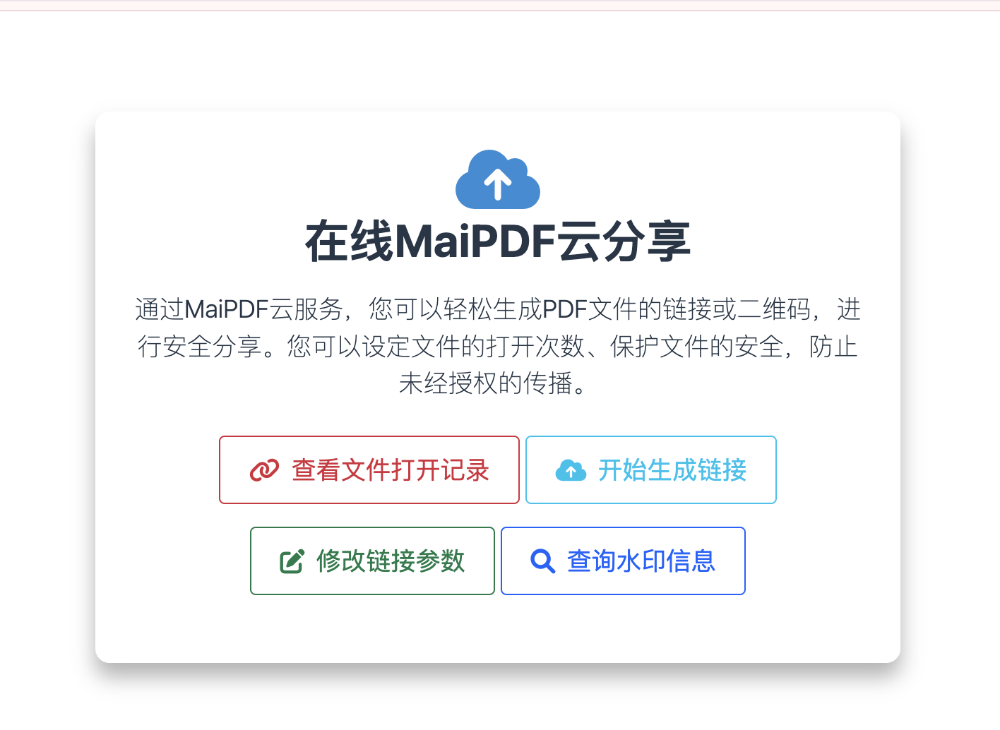
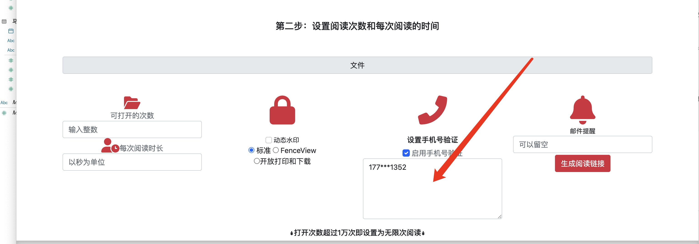
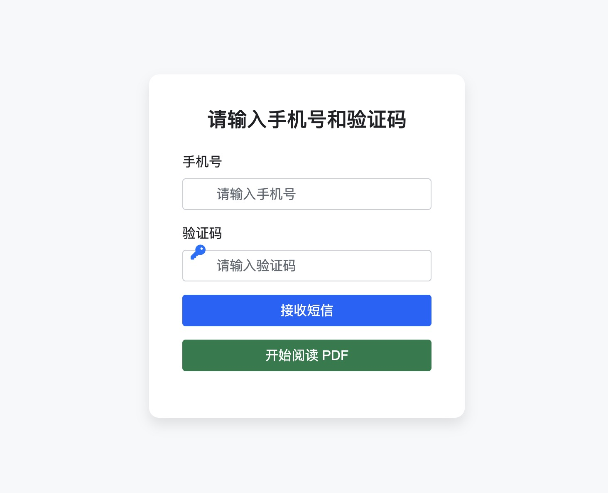
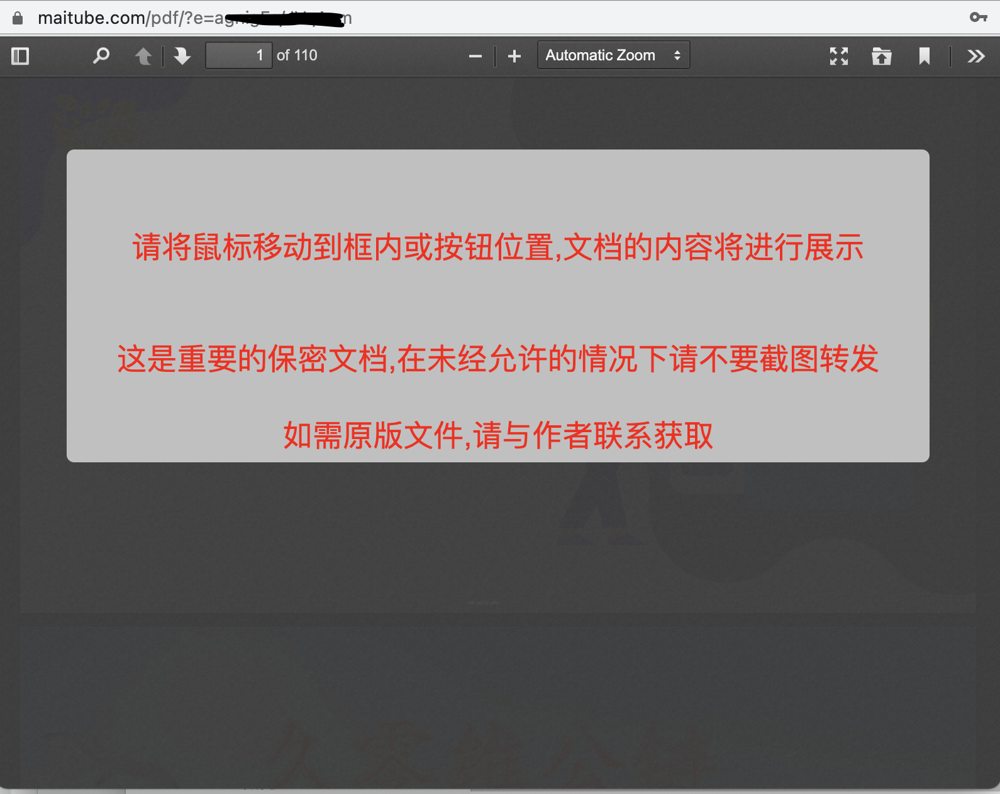

MaiPDF：革命性的PDF追踪和分析解决方案
MaiPDF 是一款创新的PDF文档管理和追踪工具，让您能够轻松地将PDF文件转换为可追踪的链接，并实时监控访问者的行为数据，包括IP地址、访问时间等详细信息。

🚀 MaiPDF核心功能
📊 智能访问追踪
MaiPDF可以准确记录每次PDF文档的访问情况，包括：
- 访问者IP地址 - 精确定位访问来源
- 访问时间 - 详细的时间戳记录
- 访问次数 - 统计文档受关注程度
- 地理位置 - 基于IP的地理信息
🔐 高级安全设置
提供多层次的文档保护机制：
- 动态水印技术
- 访问权限控制
- 手机验证码验证
- 防截图警告
📋 使用MaiPDF的详细步骤
第一步：上传PDF文件
在MaiPDF平台上传您需要追踪的PDF文档。系统支持多种格式和大小的PDF文件。

第二步：配置追踪设置
根据您的需求配置各种追踪和安全选项：
- 设置访问权限
- 配置水印选项
- 启用安全验证

第三步：生成追踪链接
系统会为您的PDF生成唯一的追踪链接和二维码，方便分享给目标用户。
第四步：查看访问记录
通过后台管理界面，您可以实时查看所有的访问记录和统计数据。


🔍 高级功能详解
动态水印保护
MaiPDF的动态水印功能可以在PDF文档上添加个性化的水印信息，有效防止文档被非法复制和传播。

水印信息查询
通过水印码可以快速查询文档的相关信息和访问记录。


安全验证机制
支持手机验证码验证，确保只有授权用户才能访问重要文档。
 ⚠️ 防截图警告
MaiPDF具备智能防截图功能，当检测到用户试图截图时会显示警告信息。
📈 为什么选择MaiPDF？
🎯 精确的数据分析
获得详细的访问分析数据，了解您的文档传播效果和受众分布。
🛡️ 企业级安全
多重安全保护机制，确保您的敏感文档得到最佳保护。
📱 跨平台兼容
支持PC、手机、平板等多种设备，随时随地管理您的PDF文档。
🔄 实时同步
访问数据实时更新，让您第一时间了解文档的访问情况。
🎯 适用场景
- 商务合作 - 追踪合同、提案的查看情况
- 教育培训 - 监控学习资料的访问统计
- 市场营销 - 分析宣传资料的传播效果
- 法律文件 - 确保敏感文档的安全访问
- 产品手册 - 了解用户对产品信息的关注度
🚀 立即开始使用MaiPDF
MaiPDF为PDF文档管理带来了全新的可能性。通过智能追踪和安全保护功能，让您的每一份文档都能发挥最大价值。
访问MaiPDF官网，开始您的PDF智能管理之旅！